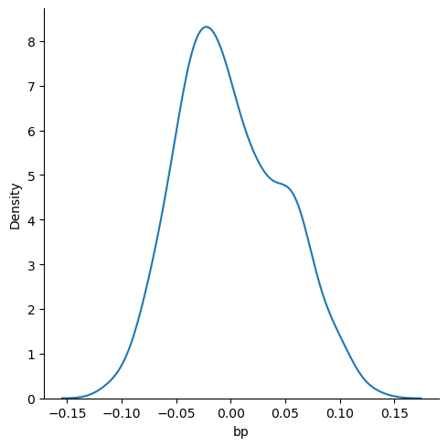
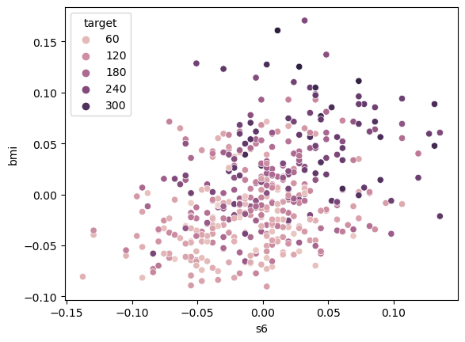

import numpy as np # library used for working with arrays
import pandas as pd # library used for data manipulation and analysis
import seaborn as sns # library for visualization
import matplotlib.pyplot as plt # library for visualization
%matplotlib inline
# to suppress warnings
import warnings
warnings.filterwarnings('ignore')from sklearn.datasets import load_diabetes
import pandas as pd
# Load the diabetes dataset
diabetes = load_diabetes()
# Convert the dataset's data to a DataFrame
df = pd.DataFrame(diabetes.data, columns=diabetes.feature_names)
# Add the target variable to the DataFrame
df['target'] = diabetes.target
# Show the DataFrame
df.head()| age | sex | bmi | bp | s1 | s2 | s3 | s4 | s5 | s6 | target | |
|---|---|---|---|---|---|---|---|---|---|---|---|
| 0 | 0.038076 | 0.050680 | 0.061696 | 0.021872 | -0.044223 | -0.034821 | -0.043401 | -0.002592 | 0.019907 | -0.017646 | 151.0 |
| 1 | -0.001882 | -0.044642 | -0.051474 | -0.026328 | -0.008449 | -0.019163 | 0.074412 | -0.039493 | -0.068332 | -0.092204 | 75.0 |
| 2 | 0.085299 | 0.050680 | 0.044451 | -0.005670 | -0.045599 | -0.034194 | -0.032356 | -0.002592 | 0.002861 | -0.025930 | 141.0 |
| 3 | -0.089063 | -0.044642 | -0.011595 | -0.036656 | 0.012191 | 0.024991 | -0.036038 | 0.034309 | 0.022688 | -0.009362 | 206.0 |
| 4 | 0.005383 | -0.044642 | -0.036385 | 0.021872 | 0.003935 | 0.015596 | 0.008142 | -0.002592 | -0.031988 | -0.046641 | 135.0 |
# finds the number of columns in the dataset
total_cols=len(df.axes[1])
print("Number of Columns: "+str(total_cols))Number of Columns: 11# finds the number of rows in the dataset
total_rows = len(df.axes[0])
print("Number of Rows: "+str(total_rows))Number of Rows: 442print('The dimension of the DataFrame is: ', df.ndim)The dimension of the DataFrame is: 2df.size4862#The info() function is used to print a concise summary of a DataFrame.
#This method prints information about a DataFrame including the index dtype and column dtypes, non-null values and memory usage.
df.info()<class 'pandas.core.frame.DataFrame'>
RangeIndex: 442 entries, 0 to 441
Data columns (total 11 columns):
# Column Non-Null Count Dtype
--- ------ -------------- -----
0 age 442 non-null float64
1 sex 442 non-null float64
2 bmi 442 non-null float64
3 bp 442 non-null float64
4 s1 442 non-null float64
5 s2 442 non-null float64
6 s3 442 non-null float64
7 s4 442 non-null float64
8 s5 442 non-null float64
9 s6 442 non-null float64
10 target 442 non-null float64
dtypes: float64(11)
memory usage: 38.1 KB# checking for missing values (null)
#functions that return a boolean value indicating whether the passed in argument value is in fact missing data.
# this is an example of chaining methods
df.isnull().values.any()False#it can also output if there is any missing values each of the columns
df.isnull().any()age False
sex False
bmi False
bp False
s1 False
s2 False
s3 False
s4 False
s5 False
s6 False
target False
dtype: bool# We should find the summary statistics for all variables except 'outcome' in the dataset.
# It is our output variable in our case.
# Summary statistics of data represent descriptive statistics.
# Descriptive statistics include those that summarize:
# the central tendency, dispersion and shape of a dataset’s distribution, excluding NaN values.
df.iloc[:,0:10].describe()| age | sex | bmi | bp | s1 | s2 | s3 | s4 | s5 | s6 | |
|---|---|---|---|---|---|---|---|---|---|---|
| count | 4.420000e+02 | 4.420000e+02 | 4.420000e+02 | 4.420000e+02 | 4.420000e+02 | 4.420000e+02 | 4.420000e+02 | 4.420000e+02 | 4.420000e+02 | 4.420000e+02 |
| mean | -2.511817e-19 | 1.230790e-17 | -2.245564e-16 | -4.797570e-17 | -1.381499e-17 | 3.918434e-17 | -5.777179e-18 | -9.042540e-18 | 9.293722e-17 | 1.130318e-17 |
| std | 4.761905e-02 | 4.761905e-02 | 4.761905e-02 | 4.761905e-02 | 4.761905e-02 | 4.761905e-02 | 4.761905e-02 | 4.761905e-02 | 4.761905e-02 | 4.761905e-02 |
| min | -1.072256e-01 | -4.464164e-02 | -9.027530e-02 | -1.123988e-01 | -1.267807e-01 | -1.156131e-01 | -1.023071e-01 | -7.639450e-02 | -1.260971e-01 | -1.377672e-01 |
| 25% | -3.729927e-02 | -4.464164e-02 | -3.422907e-02 | -3.665608e-02 | -3.424784e-02 | -3.035840e-02 | -3.511716e-02 | -3.949338e-02 | -3.324559e-02 | -3.317903e-02 |
| 50% | 5.383060e-03 | -4.464164e-02 | -7.283766e-03 | -5.670422e-03 | -4.320866e-03 | -3.819065e-03 | -6.584468e-03 | -2.592262e-03 | -1.947171e-03 | -1.077698e-03 |
| 75% | 3.807591e-02 | 5.068012e-02 | 3.124802e-02 | 3.564379e-02 | 2.835801e-02 | 2.984439e-02 | 2.931150e-02 | 3.430886e-02 | 3.243232e-02 | 2.791705e-02 |
| max | 1.107267e-01 | 5.068012e-02 | 1.705552e-01 | 1.320436e-01 | 1.539137e-01 | 1.987880e-01 | 1.811791e-01 | 1.852344e-01 | 1.335973e-01 | 1.356118e-01 |
sns.displot(df['bp'], kind='kde')
plt.show()
df[df['s6']==df['s6'].max()]['bmi']
print(df.loc[[23]])
print(df.loc[[117]])
print(df.loc[[350]])
# 177 350 age sex bmi bp s1 s2 s3 \
23 0.045341 0.05068 0.060618 0.031065 0.028702 -0.047347 -0.054446
s4 s5 s6 target
23 0.07121 0.133597 0.135612 245.0
age sex bmi bp s1 s2 s3 \
117 0.059871 -0.044642 -0.021295 0.087287 0.045213 0.031567 -0.047082
s4 s5 s6 target
117 0.07121 0.079122 0.135612 281.0
age sex bmi bp s1 s2 s3 \
350 -0.02731 0.05068 0.060618 0.107944 0.012191 -0.017598 -0.002903
s4 s5 s6 target
350 -0.002592 0.070207 0.135612 243.0 # mean
m1 = df['bmi'].mean()
print(m1)
# median
m2 = df['bmi'].median()
print(m2)
# mode
m3 = df['bmi'].mode()[0]
print(m3)-2.2455642172282577e-16
-0.007283766209687899
-0.03099563183506548# How many women's Glucose levels are above the mean level of Glucose
# mean() method finds the mean of all numerical values in a series or column.
v1 = df[df['s6']>df['s6'].mean()].shape[0]
print(v1)
# count the number of women that have their 'BloodPressure' equal to the median of 'BloodPressure'
v2 = df[df['bp']==df['bp'].median()].shape[0]
print(v2)
# and their 'BMI' less than the median of 'BMI'
v3 = df[df['bmi']<df['bmi'].median()].shape[0]
print(v3)218
21
218df1 = df[(df['bp']==df['bp'].median()) & (df['bmi']<df['bmi'].median())]
number_of_patients=len(df1.axes[0])
print("Number of patients: " +str(number_of_patients))Number of patients: 9# Getting a pairwise distribution between Glucose, Skin thickness and Diabetes pedigree function.
sns.pairplot(data=df,vars=['s6', 'bp', 'bmi'], hue = 'target')
plt.show()
# Studying the correlation between glucose and insulin using a Scatter Plot.
sns.scatterplot(x='s6',y='bmi',data=df, hue = 'target')
plt.show()
# The scatter plot above implies that mostly the increase in glucose does relatively little change in insulin levels
# It also shows that in some the increase in glucose increases in insulin.
# This could probably be outliers.
# Let us explore the possibility of outliers using the Box Plot.
# Boxplot is a way to visualize the five-number summary of the variable.
# Boxplot gives information about the outliers in the data.plt.boxplot(df['age'])
plt.title('Boxplot of Age')
plt.ylabel('age')
plt.show()
# The box plot shows the presence of outliers above the horizontal line.
# Understanding the number of women in different age groups with diabetes.
plt.hist(pima[pima['Outcome']==1]['Age'], bins = 5)
plt.title('Distribution of Age for Women who has Diabetes')
plt.xlabel('Age')
plt.ylabel('Frequency')
plt.show()
# Of all the women with diabetes most are from the age between 22 to 30.
# The frequency of women with diabetes decreases as age increases.
# understanding the number of women in different age groups without diabetes.
plt.hist(pima[pima['Outcome']==0]['Age'], bins = 5)
plt.title('Distribution of Age for Women who do not have Diabetes')
plt.xlabel('Age')
plt.ylabel('Frequency')
plt.show()
# The highest number of Women without diabetes range between ages 22 to 33.
# Women between the age of 22 to 35 are at the highest risk of diabetes
# and also the is the highest number of those without diabetes.
# The IQR or Inter Quartile Range is a statistical measure for the variability in a given data.
# It is a methodology that is generally used to filter outliers in a dataset
Q1 = pima.quantile(0.25)
Q3 = pima.quantile(0.75)
IQR = Q3 - Q1
print(IQR)Pregnancies 5.0000
Glucose 41.2500
BloodPressure 18.0000
SkinThickness 32.0000
Insulin 127.2500
BMI 9.3000
DiabetesPedigreeFunction 0.3825
Age 17.0000
Outcome 1.0000
dtype: float64# Correlation is a statistic that measures the degree to which two variables move with each other.
corr_matrix = df.iloc[:,0:10].corr()
corr_matrix| age | sex | bmi | bp | s1 | s2 | s3 | s4 | s5 | s6 | |
|---|---|---|---|---|---|---|---|---|---|---|
| age | 1.000000 | 0.173737 | 0.185085 | 0.335428 | 0.260061 | 0.219243 | -0.075181 | 0.203841 | 0.270774 | 0.301731 |
| sex | 0.173737 | 1.000000 | 0.088161 | 0.241010 | 0.035277 | 0.142637 | -0.379090 | 0.332115 | 0.149916 | 0.208133 |
| bmi | 0.185085 | 0.088161 | 1.000000 | 0.395411 | 0.249777 | 0.261170 | -0.366811 | 0.413807 | 0.446157 | 0.388680 |
| bp | 0.335428 | 0.241010 | 0.395411 | 1.000000 | 0.242464 | 0.185548 | -0.178762 | 0.257650 | 0.393480 | 0.390430 |
| s1 | 0.260061 | 0.035277 | 0.249777 | 0.242464 | 1.000000 | 0.896663 | 0.051519 | 0.542207 | 0.515503 | 0.325717 |
| s2 | 0.219243 | 0.142637 | 0.261170 | 0.185548 | 0.896663 | 1.000000 | -0.196455 | 0.659817 | 0.318357 | 0.290600 |
| s3 | -0.075181 | -0.379090 | -0.366811 | -0.178762 | 0.051519 | -0.196455 | 1.000000 | -0.738493 | -0.398577 | -0.273697 |
| s4 | 0.203841 | 0.332115 | 0.413807 | 0.257650 | 0.542207 | 0.659817 | -0.738493 | 1.000000 | 0.617859 | 0.417212 |
| s5 | 0.270774 | 0.149916 | 0.446157 | 0.393480 | 0.515503 | 0.318357 | -0.398577 | 0.617859 | 1.000000 | 0.464669 |
| s6 | 0.301731 | 0.208133 | 0.388680 | 0.390430 | 0.325717 | 0.290600 | -0.273697 | 0.417212 | 0.464669 | 1.000000 |
# 'annot=True' returns the correlation values
plt.figure(figsize=(8,8))
sns.heatmap(corr_matrix, annot = True)
# display the plot
plt.show()
# The closer the correlation is to 1, the more positively correlated they are;
# that is as one increases so does the other and the closer to 1 the stronger this relationship is.
# A correlation closer to -1 is similar,
# but instead of both increasing one variable will decrease as the other increases.